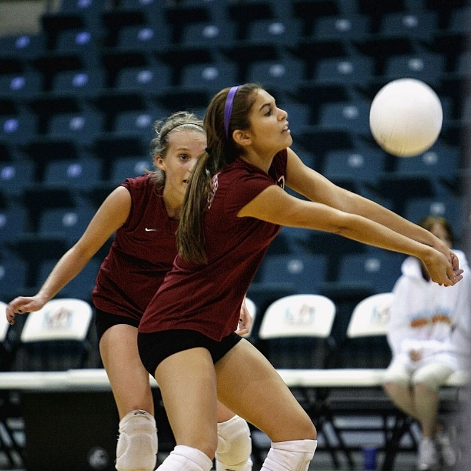
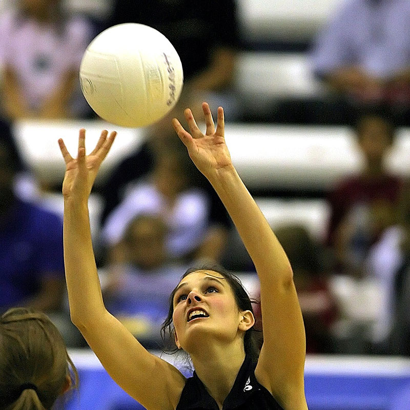
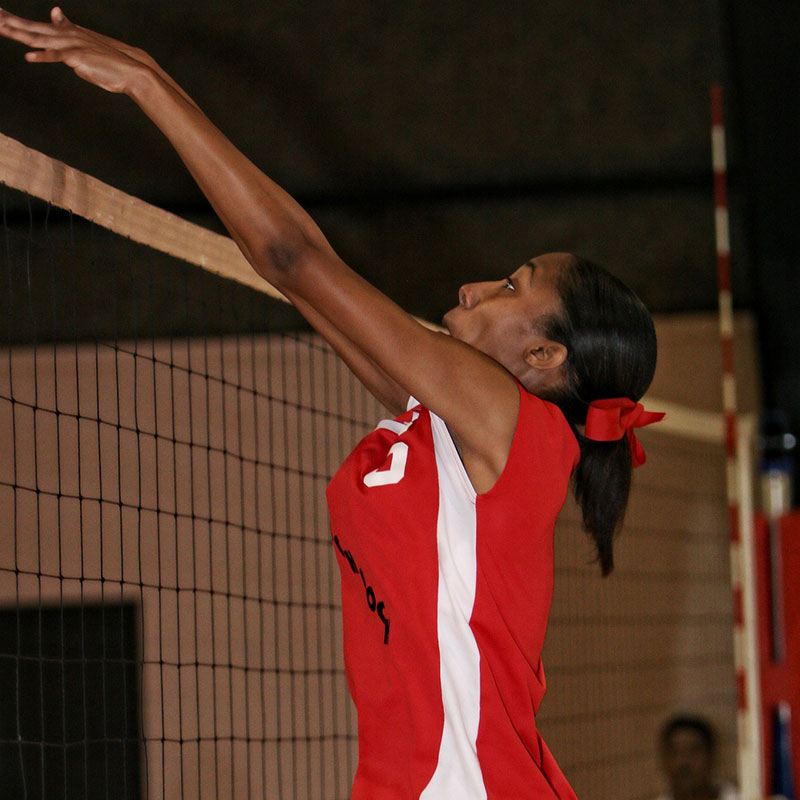

star低手
fiber_manual_record兩手向身體內側夾緊並且併合。
fiber_manual_record使落球點於手腕後方一個拳頭之距離。
fiber_manual_record雙眼與身體正面迎向來球，隨即判斷落球點。
fiber_manual_record與球觸碰時，利用整個身體配合膝蓋下蹲以及向後方收力，減緩衝擊力道，以便隊友組織攻擊。
fiber_manual_record勿以拳頭擊球、勿將兩手提前併合移動

bookmark高手
- 用途:高手是除了低手外，同為時常用到的技術，適用於處理較高位置的球。
- 馬上判斷落球點，使身體軀幹迅速移動至來球方向。
- 使用雙手上舉、十指張開，將球置於額頭斜上方，雙手前三指手指發力，將球推出。
- 利用身體與手臂的協調性，透過雙腳膝蓋向上帶動雙臂至手指，將球送達所需目標處。
- 雙指觸球時，手指需出力，以防有挫傷(吃蘿蔔)的情況發生。
- 兩手腕觸球得做到同時推出，不得長短手，避免二次觸球造成違例。

thumb_up高手
- 用途:攔網是防守對手進攻的技術，嘗試將對手攻擊球進行阻擋或者無效化，以利我方的防守。
- 球員在網子前方起跳，把雙手伸直高於網子上方，盡可能將球下壓。
- 達最高點時，記住一定得將手指繃緊，以防強擊球的力道造成手指損傷(挫傷或骨折)。
- 平時練習時，可多練習與隊友併攏，來增加和提高將球擋下的成功率與面積。
- 須注意落地時，小心不要與隊友的足部相互交疊，否則容易造成翻船(扭傷)的情況發生。